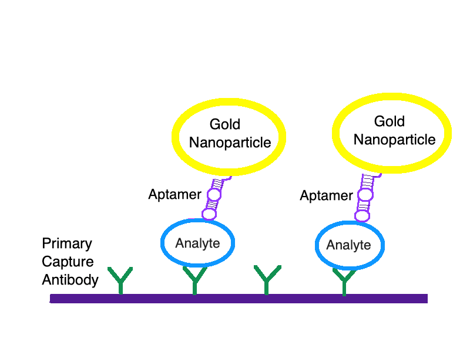
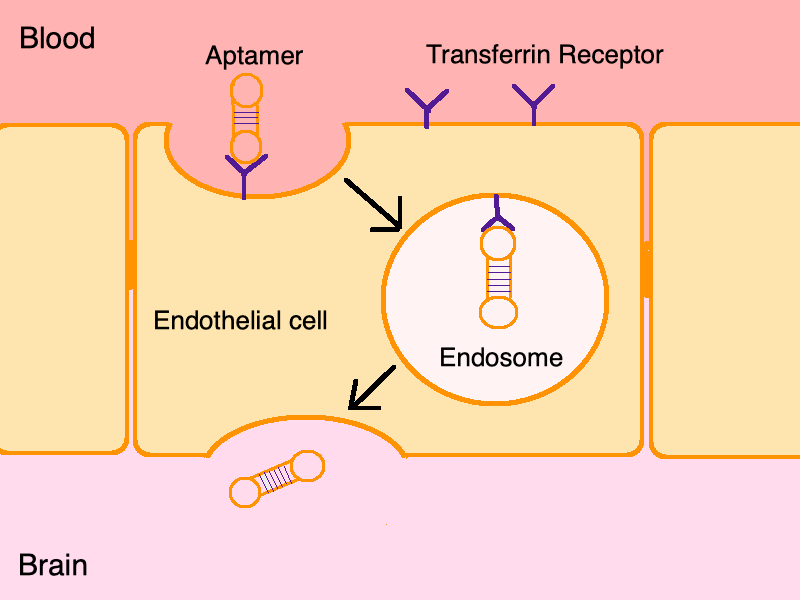
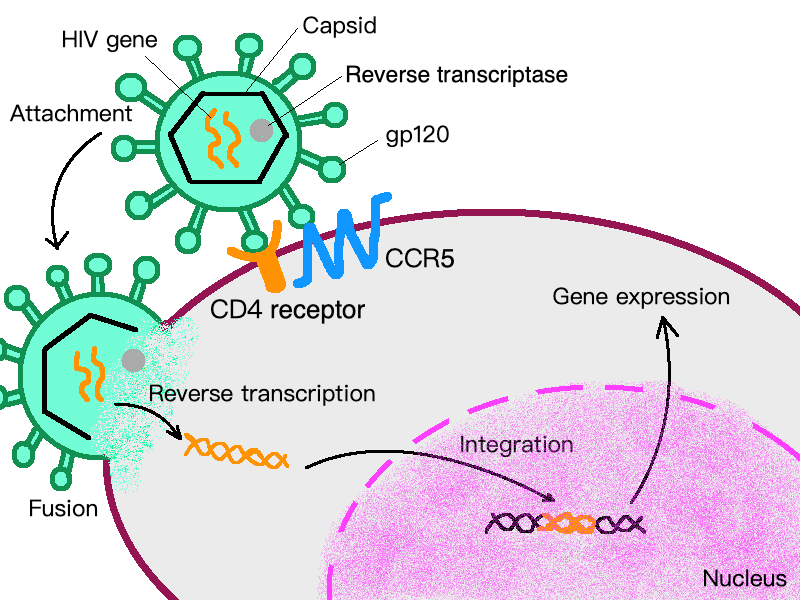

Introduction
PCR has been invented for over 30 years, and it is applied to various field.
Therefore, accurate PCR product is crucial to obtain the best result. With the outcome of
our experiment in optimizing the PCR efficiency by incubating the aptamer and nanoparticle
complex with polymerase, we could apply this technique to those several PCR application
below, and further generate the desirable product more efficiently.
A. Gene expression
In order to know gene expression in the tissue in particular time, it is necessary to
reverse transcript mRNA to cDNA and amplify DNA by PCR. This technique also applied in
molecular diagnosis, an analysis of personal genome’s biological marker, which needs PCR to
help. Besides, PCR is also used in distinguishing different kinds of bacteria by their mRNA
expression in the diagnosis of periodontology.[1]
B. Detection
By designing specific primers to conduct PCR, sequence variations in alleles in special
tissue can be detected. It is used in genotyping of transgenic organisms and genetic
analyses of mutations in cancer and heredity.[2] Take GMO as an example, GMO
(Genetically modified organism) brings a foreign sequence of DNA. PCR can be used in a wide
kinds of samples, including seed, processed food, finished products. PCR method is applied
to industry and lab test worldwide.[3]
C. Sequencing
Before sequencing, PCR is used to amplify template DNA to get enough quantity for sequencing.
[4]In these process, it is essential to ensure every nucleotide is correct, or the sequencing
will be inaccurate.[5]
D. qPCR
In quantitative PCR (qPCR), the quality of DNA product is the key to receive correct result.
Non-specific binding products being created during the process are raising serious problems, which
affects the amount the target DNA products. The result of our work diminishes the threat of
non-specific binding in low temperature, therefore optimizing the yield of qPCR.
Conclusion
PCR have a wide range of applications, and the accuracy of PCR
products is undoubtedly important. Our research in aptamer and nanoparticle complex can be
used in all PCR to increase its specificity.
A. Aptamer-Based ELISA Technology
Analyte-specific aptamers can work as antibodies and can be added to
detect target molecule. By labeling aptamers with fluorophore gold nanoparticles carrying
different colors corresponding to coagulation status[6], it can be easier to be seen by naked
eyes.

B. Biosensors
The dispatch test concerning the detection of adenosine and cocaine
through aptamer-link lateral flow device has been brought out. With the help of gold
nanoparticle’ s color indication, we can observe the test result easily.[7] Meanwhile,
multiple methods in order to improve its sensitivity are being developed. Our work provides
an insight in the combination of GO and aptamer, and it’s complex can tackle some problems in
bio-sensors.
C. Aptamer Probe
Aptamer has high affinity, and thus it can act as probe to attach to
specific receptor. For example, Zhang P et al. indicated that RNA aptamer recognizes proteins
on TNF receptor family and binds to human CD30 on intact cells. By this way, Jurkat cell, a
human T-cell leukemia cell, which doesn’t have CD30 will be detected.[8] Aptamer probe can be
applied to diagnosis and lab test. In our project, combining aptamer with nanoparticle can
enhance its binding.
D. Electrochemical Detection
We had conjugated the aptamers to graphene oxide which is conductive
material for electrochemical detection. If aptamers combine to targeted protein, electrical
conductivity will be higher. By using the method, rapid detection in biotechnology will be
available in near future.
A. Anticoagulation Activity
In a research in 2012, Liao et al found out that thrombin-binding
aptamer-conjugated gold nanoparticles have highly efficient inhibition activity, which
provide even better anticoagulation activity than four commercial drugs. [9] Further, by
this technique, we could expect that those nanomaterials could be a solution for the
incurable disease right now.
B. A New Way to Combat the Epidemic Outbreak
When an unknown outbreak happens, it always takes a long time for
scientists from getting the virus strain to figuring out the structure of the virus, let
alone inventing a vaccine or treating the infectious disease. If those nanomaterials could
be designed artificially by the technique SELEX, picking out the desired segment which could
be chemically complementary to the specific virus. Then,by inhibiting viruses binding to the
human cells and further prevent infection, those nanomaterials can physically block the
movement of virus. By the development of SELEX, we have faith in this technique could help us
beat the unknown outbreak more quickly and efficiently.
C. Aptamer as a potential cure of brain cancer
The blood brain barrier (BBB) is a network of tiny blood vessels
with a uniform monolayer of endothelial cells that prevents all kind of substance harmful
to brain from entering but also forms an obstacle for drug delivering to brain.In comparison
to antibody, aptamer has a much smaller size, which increases its permeability to tissue and
allows drugs to integrate with it and remains the specificity to its target. Many aptamers
have been generated against proteins expression in glioblastoma cell. By conjugating the
glioblastoma targeting aptamer and transferrin aptamer, the dimer of the two aptamer is able
to transporting across the BBB[10]. As a result, the aptamer dimer might be a great method to
send drugs into brain tissue and increase the specificity of drugs to the brain tumor.
In addition, many researches on killing cancer cell by heated nanoparticles
have been done. For example, by coating antibody against specific cancer cell to gold nanoparticles
and heating up the complex by infrared ray (IR), we are able to damage cancer cell accurately
[11,12]. We suppose that replacing antibody by aptamer can not only avoid antibody being broken down
by immune system, but also aid nanoparticle to path through the BBB. To sum up, aptamer might also
improve the surgical treatment on curing brain cancer.

D. Antiviral Drug

HIV (human immunodeficiency virus) replicates its genome by
reversing transcription and integrating into host DNA. Aptamer targeting to reverse
transcription polymerase can inhibit virus from replication. Besides, aptamer against
gp120 (viral glycoproteins help to entry), aptamer against nucleocapsid protein, aptamer
against CD4 and CCR5 (block viral entry) are developing now. Also, using nanoparticles to
enhance aptamer can provide greater efficiency. These ideas may become new therapy to cure
AIDS.[13]
[1] Maheaswari R, Kshirsagar JT and Lavanya N (2016). Polymerase chain reaction: A molecular diagnostic tool in periodontology. J. Indian Soc. Periodontol. 20: 128-135.
[2] Nobel Media AB (2014) The 2007 Nobel Prize in Physiology or Medicine - Advanced Information. nobelprize.org
[3] A. Holst-Jensen, S.B. Rønning, A. Løvseth, K.G. Berdal
PCR technology for screening and quantification of genetically modified organisms (GMOs)Analytical and Bioanalytical Chemistry, 375 (2003), pp. 985-993
[4] Saiki RK, Gelfand DH, Stoffel S, Scharf SJ, Higuchi R, Horn GT, Mullis KB, Erlich HA: Primer-directed enzymatic amplification of DNA with a thermostable DNA polymerase. Science 239: 487–491 (1988).
[5] Eid, J. et al. Real-time DNA sequencing from single polymerase molecules. Science 323, 133–138 (2009).
[6] Saha, K., Agasti, S. S., Kim, C., Li, X., & Rotello, V. M. (2012). Gold nanoparticles in chemical and biological sensing. Chemical reviews, 112(5), 2739-2779.
[7] Liu, J., D. Mazumdar, and Y. Lu, A simple and sensitive "dipstick" test in serum based on lateral flow separation of aptamer-linked nanostructures.Angew Chem Int Ed Engl, 2006. 45(47): p. 7955-9.
[8] Zhang P, Zhao N, Zeng Z, et al. Using an RNA aptamer probe for flow cytometry detection of CD30-expressing lymphoma cells. Lab. Invest. 2009;89(12):1423–1432
[9] Liao, Y., Shiang, Y., Huang, C., & Chang, H. (2012). Molecularly Imprinted Aptamers of Gold Nanoparticles for the Enzymatic Inhibition and Detection of Thrombin. Langmuir, 28(24), 8944-8951. doi:10.1021/la204651t
[10] . Hays, E., Duan, W., & Shigdar, S. (2017). Aptamers and Glioblastoma: Their Potential Use for Imaging and Therapeutic Applications. International Journal of Molecular Sciences,18(12), 2576.
[11] Abadeer, N. S., & Murphy, C. J. (2016). Recent Progress in Cancer Thermal Therapy Using Gold Nanoparticles. The Journal of Physical Chemistry C,120(9), 4691-4716.
[12] Zharov, V. P., Galitovskaya, E. N., Johnson, C., & Kelly, T. (2005). Synergistic enhancement of selective nanophotothermolysis with gold nanoclusters: Potential for cancer therapy. Lasers in Surgery and Medicine,37(3), 219-226.
[13] Wu Y, Marsh JW. Early transcription from nonintegrated DNA in human immunodeficiency virus infection. J Virol. 2003;77:10376–82. doi:10.1128/JVI.77.19.10376-10382.2003